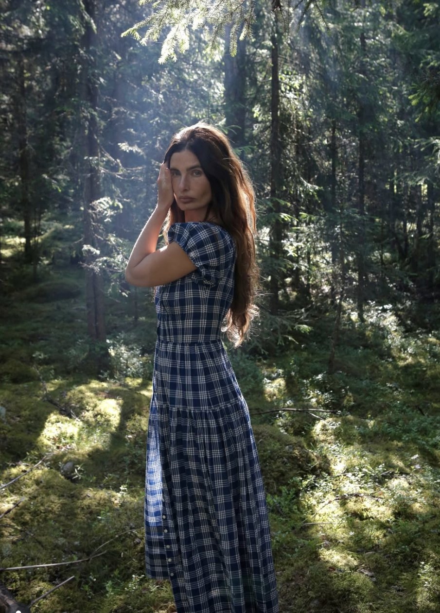

Om mig
Hej, jag är Sara.
Jag är pojkmamma, biodlare och homeopatistudent – och jag arbetar med Biofield Tuning, nära naturen i Sjuntorp i Västsverige.
Det mesta jag vet om att sakta ner har jag lärt mig utomhus: av bikupan, skogen och det strömmande vattnet. Samma tempo tar jag med mig in i varje session – varmt, utan brådska och med gott om utrymme att bara vila och lyssna.
Boka en tid med migAllt i naturen har sin egen ton.


Vad är Biofield Tuning?
Att lyssna på fältet runt dig, med ljud.
Biofield Tuning är en ljudterapimetod där stämgafflar används för att utforska biofältet – energifältet som omger och genomströmmar kroppen – och hjälpa det tillbaka till en klarare, stadigare ton.
Ditt fält bär din historia
I Biofield Tunings modell sträcker sig fältet ungefär en och en halv meter ut från kroppen, och våra upplevelser lämnar spår i det – lite som årsringar i ett träd. Nuet finns nära kroppen; det tidiga livet ute vid kanten.
Att lyssna med stämgafflarna
Jag slår an en stämgaffel vid ytterkanten av ditt fält och rör mig långsamt in mot dig medan jag lyssnar. Där tonen förändras – blir luddig, platt eller ojämn – stannar jag och håller kvar gaffeln tills ljudet klarnar och blir stadigt. Viktade stämgafflar som placeras på kroppen gör att du också känner vibrationen.
Var metoden kommer ifrån
Metoden utvecklades av forskaren och terapeuten Eileen Day McKusick, som började arbeta med ljud på kroppen 1996. När hon använde stämgafflar i sin massagepraktik märkte hon att tonen förändrades i rummet runt hennes klienter. I dag lärs metoden ut till utövare över hela världen.
Det är enkelt, varsamt och icke-invasivt – inga nålar, ingen massage. Du vilar; ljudet gör jobbet.
Så går en session tillSå går en session till
Lugnt, från början till slut.
Kom fram och landa
Kom in, ta av dig skorna och ta ett glas vatten. Vi börjar med ett kort, avslappnat samtal om vad som för dig hit och hur du vill känna dig när du går.
Vila på britsen
Du ligger fullt påklädd under en filt medan jag arbetar med stämgafflarna i fältet runt dig och på kroppen. Vissa somnar, vissa känner värme eller pirrningar, andra njuter bara av stillheten.
Ta det varsamt
Vi tar några minuter och pratar om sessionen. Drick sedan mycket vatten, vila om du kan och var gärna ute en stund – barfota i gräset om vädret tillåter.
Ett kort samtal
Vi hörs via telefon, video eller WhatsApp och pratar om vad som för dig hit och hur du vill känna dig. Ha en lugn, varm plats redo där du kan ligga ostört.
Vila hemma
Du lägger dig under en filt och vilar medan jag arbetar med stämgafflarna här i Sjuntorp. Telefonen på ljudlöst, ögonen stängda – du behöver inte göra någonting.
Vi hörs igen
Vi pratar igen och delar det vi båda lagt märke till. Gör det sedan mysigt för dig, drick vatten och ta resten av dagen lugnt om du kan.
Fina ord
Platshållare – byt mot riktiga citat från klienter[Platshållare] Jag visste inte vad jag skulle förvänta mig, och det blev den mest vilsamma timmen jag haft på länge.
[Platshållare] Sara har ett så lugnt sätt. Jag kände mig trygg från första minuten.
[Platshållare] Ljudet från stämgafflarna stannade kvar hela kvällen, på bästa sätt.
Bra att veta
Hur många sessioner ska jag boka?
En enstaka session är ett fint sätt att prova. Många väljer att börja med tre, ungefär en vecka isär, eftersom varje session bygger vidare på den förra. Sedan kommer en del tillbaka i takt med årstiderna.
Vad kan jag känna?
Det är olika för alla. En del känner värme, pirrningar eller en våg av känslor; en del somnar; andra märker inte så mycket just då, men mer under dagarna efter. Allt det är helt normalt.
Hur förbereder jag mig?
Ha bekväma kläder och drick mycket vatten under dagen. Om du kan, lämna lite luft i kalendern efteråt i stället för att rusa vidare till nästa sak.
Hur fungerar en distanssession?
En distanssession följer samma upplägg som på plats – jag arbetar med stämgafflarna i mitt rum i Sjuntorp medan du vilar hemma. Du kan boka var du än bor i världen; bokningssidan visar tiderna i din egen tidszon.
Var hittar jag dig?
Mitt rum ligger i Sjuntorp, strax utanför Trollhättan. Adress och vägbeskrivning får du i bokningsbekräftelsen. [Parkering]
Om jag behöver avboka?
[Avbokningsregler – t.ex. fri ombokning fram till 24 timmar innan.] Använd länken i din bekräftelse för att flytta din tid.
Sessioner
Ett pris, var du än är.
Kom en gång, eller börja med en serie om tre, ungefär en vecka isär – varje session bygger vidare på den förra.
Boka
Hitta en tid som känns rätt.
Berätta vilken session du vill ha och när det passar dig, så hör jag av mig via mejl så att vi hittar en tid tillsammans.
Välj session, dag och tid. Du får en bekräftelse via mejl, med en länk för att boka om ifall planerna ändras.
Brev från landet
Några brev om året, i takt med årstiderna: lediga tider, bina och det som växer.